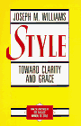

Writing, Editing, and Composition

This page presents papers, articles, and commentary on writing, editing, composition, literacy, the acquisition of writing, and teaching composition.Using the Passive Voice To Create Coherence
Abstract: Topical Structure Analysis of Accomplished English Prose
Thesis: Topical Structure Analysis of Accomplished English Prose
Can Research into Coherence Affect How Writing Is Taught?
Coherence and Cohesion in Text Linguistics
Theory and Method of Topical Structure Analysis
The Three Topical Progressions
Diagrams and Examples of Topical Structure Analysis
Grice’s Cooperation Principle and Conversational Maxims
How to Diagram Topical Progressions
A List of Readings in the Acquisition of Writing
Motivations for News Language Style: Audience Perception or Cultural Orientation?
Proposal and Readings for a Course on Educational Linguistics: The Acquisition of Literacy
Vachek’s Definition of Written Language
Vachek’s Functionalist Approach to Written Language
Vachek on the Correspondence of Phonemes and Graphemes
DocBook SEO: Tagging DocBook Documents for Search Engine Optimization
For SEO, Write Unique and Accurate Titles
Search Engine Optimization Techniques: Tips to Improve Your Search Engine Rankings
Write High-Quality Content for Free SEO
Identifying and Resolving Ambiguity
Related
Interpretation and Indeterminacy.
 Throughout the essay,
I will argue a hard line: the exact meaning of a speaker’s utterance in
a contextualized exchange is often indeterminate. Within the context of
the analysis of the teacher-pupil exchange, I will argue for the
superiority of interactional linguistics over speech act theory because
it reduces the indeterminacy and yields a more principled
interpretation, especially when the interactional approach is
complemented by elements from other sociologically influenced methods,
namely the ethnography of communication and Labovian sociolinguistics.
Read more …
Throughout the essay,
I will argue a hard line: the exact meaning of a speaker’s utterance in
a contextualized exchange is often indeterminate. Within the context of
the analysis of the teacher-pupil exchange, I will argue for the
superiority of interactional linguistics over speech act theory because
it reduces the indeterminacy and yields a more principled
interpretation, especially when the interactional approach is
complemented by elements from other sociologically influenced methods,
namely the ethnography of communication and Labovian sociolinguistics.
Read more …